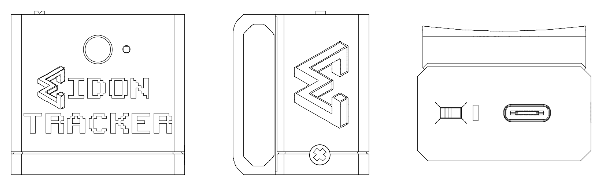
Version 1.0 Date: November 2025
The field of humanoid robotics stands at a critical inflection point. While Large Language Models (LLMs) have revolutionized AI through massive-scale training on web-scraped text data, embodied AI systems lack equivalent datasets. Current approaches to humanoid robot training rely on:
The Eidon Tracker System bridges this data gap by enabling field-deployable, full-body motion capture for creating Vision-Language-Action (VLA) training datasets. Our platform allows researchers to collect embodied AI training data anywhere humans perform tasks—from kitchens to construction sites to healthcare facilities.
Key Value Propositions:
Just as LLMs achieved breakthrough performance through massive-scale diverse training data, humanoid robots require rich datasets of human manipulation tasks paired with visual context. Eidon Tracker makes this data economically feasible to collect at scale, enabling:
Target Applications: - VLA model training for humanoid manipulation - Teleoperation interfaces for remote robotics - Biomechanics research and ergonomic analysis - Motion capture for animation and VR/AR - Physical therapy and rehabilitation monitoring
The Eidon ecosystem consists of three integrated subsystems:
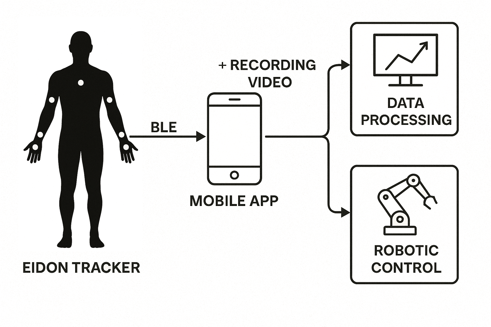
Seven wearable IMU devices providing real-time orientation tracking:
Each device contains: - Custom 2-layer PCB with ESP32-C6 microcontroller - BNO085 9-DOF IMU with hardware sensor fusion - LiPo battery with voltage monitoring - Status LED indicators - Injection-moldable 3D-printed enclosure with integrated mounting - Multi-protocol wireless (BLE + ESP-NOW)
Smartphone app serving as central data aggregator:
Real-time and post-processing kinematics engine:
┌─────────────────────────────────────────────────────────────────────┐
│ CAPTURE PHASE (In-Field) │
├─────────────────────────────────────────────────────────────────────┤
│ Human performs task wearing 7 Eidon Trackers + head-mounted phone │
│ │
│ IMU (48Hz) ──┬──► BLE ──┬──► Mobile App ──► Raw Dataset │
│ │ │ │
│ └─ Quat ──┘ │
│ │
│ Phone Camera ───────────► Timestamped Video ──► Synchronized │
└─────────────────────────────────────────────────────────────────────┘
┌─────────────────────────────────────────────────────────────────────┐
│ PROCESSING PHASE (Post-Collection) │
├─────────────────────────────────────────────────────────────────────┤
│ Raw Dataset ──► eidon-sim ──┬──► 7-DOF Joint Angles │
│ │ │
│ ├──► 3D Skeletal Trajectory │
│ │ │
│ └──► Aligned Video Frames │
└─────────────────────────────────────────────────────────────────────┘
┌─────────────────────────────────────────────────────────────────────┐
│ TRAINING PHASE (VLA Pipeline) │
├─────────────────────────────────────────────────────────────────────┤
│ Processed Dataset ──► VLA Training ──► Humanoid Control Policy │
└─────────────────────────────────────────────────────────────────────┘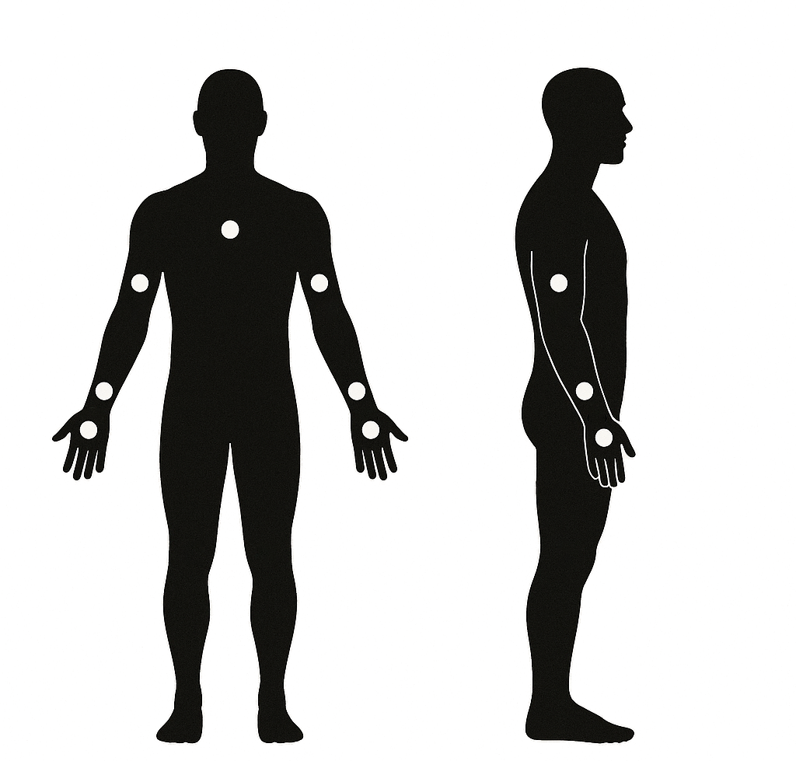
Tracker Placement: - Chest: Center of sternum (reference frame) - Left/Right Upper Arm: Lateral humerus (upper arm) - Left/Right Forearm: Posterior radius (back of forearm) - Left/Right Hand: Dorsal metacarpals (back of hand)
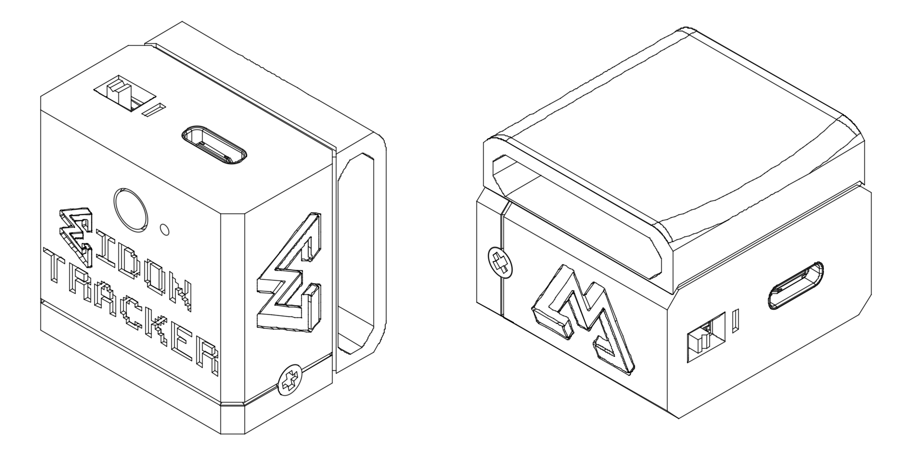
| Specification | Value |
|---|---|
| Number of tracking points | 7 (chest, 2× upper arm, 2× forearm, 2× hand) |
| IMU sampling rate | 48 Hz |
| Orientation accuracy | ±1-2° RMS |
| Wireless protocol | BLE 5.0 (to mobile) + ESP-NOW (device-to-device) |
| Battery life | 8-12 hours continuous operation |
| Latency | <50ms end-to-end (IMU → mobile app) |
| Form factor | 45×30×15mm per tracker |
| Weight | ~25g per tracker with battery |
| Cost per device | $30.84 (current production) |
| Complete 7-device system | $278.87 (including harness and charging hub) |
The Eidon Tracker hardware represents a complete custom solution optimized for wearable motion capture. Each of the seven devices is identical, with role assignment configured via software.
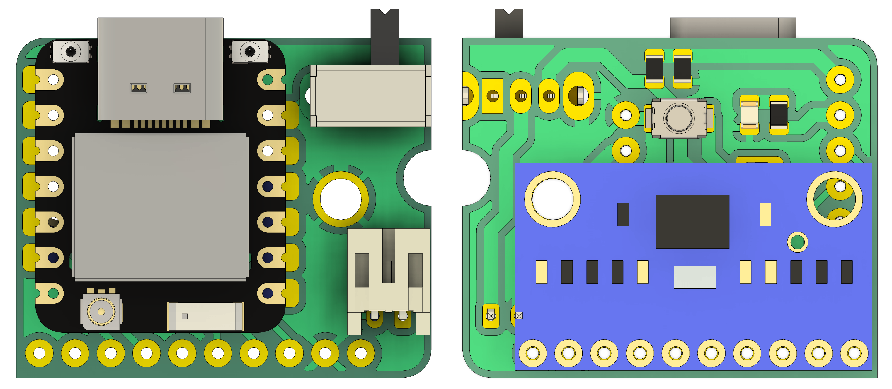
| Component | Part Number | Function | Key Specs |
|---|---|---|---|
| Microcontroller | Seeed XIAO ESP32-C6 | Dual-mode wireless + processing | RISC-V 160MHz, 512KB SRAM, BLE 5.0, WiFi 6 |
| IMU | Bosch BNO085 | 9-DOF sensor fusion | ±2000°/s gyro, ±16g accel, hardware quaternion |
| LED | Kingbright APT2012YC | Status indicator | Yellow 0805 SMD, 20mcd @ 20mA |
| Resistors | Yageo RC0805 | Voltage divider + LED limiting | 220kΩ (×2), 1kΩ (×1), ±1% tolerance |
| Button | Alps SKRKAEE020 | User input | Tactile, 50mA rating, 160gf actuation |
Battery Monitoring Circuit: - Voltage divider: 2× 220kΩ resistors create 2:1 ratio - ADC input: ESP32-C6 GPIO0 (12-bit resolution) - Measurement range: 0-8.4V (accommodates 2S LiPo configurations) - Accuracy: ±50mV across battery discharge curve - Update rate: 5-second intervals to conserve power
Battery specification: - Chemistry: LiPo (Lithium Polymer) - Nominal voltage: 3.7V - Capacity: 150-300mAh (depending on size constraints) - Protection: Built-in overcharge/discharge/short circuit protection - Connector: JST PH 2.0mm
I2C Bus (IMU Interface): - Speed: 400 kHz (Fast Mode) - Pins: GPIO19 (SCL), GPIO20 (SDA) - Pull-ups: Internal ESP32 pull-ups enabled - Address: 0x4B (configurable via GPIO18)
Status Outputs: - Main LED: GPIO15 (connection state) - Aux LED: GPIO1/A1 (activity indicator) - Drive current: ~2mA per LED (optimized for visibility + battery life)
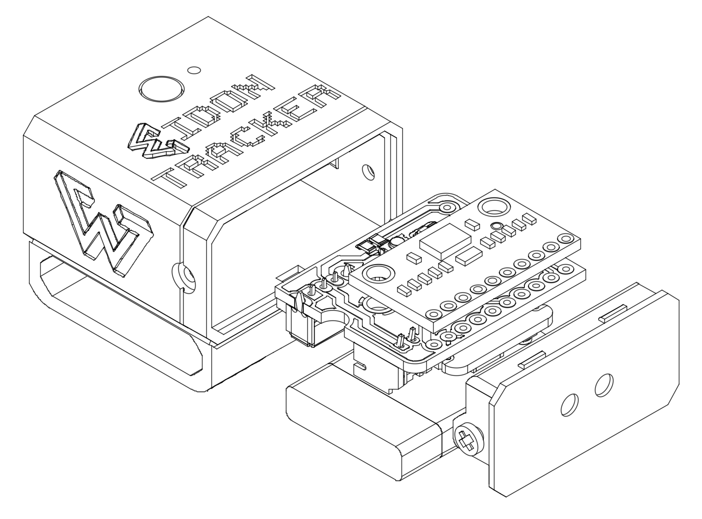
Component Stack (top to bottom): - Top lid with button access hole - Main enclosure body with PCB mounting posts - PCB with battery underneath - Integrated mounting strap channels - Bottom face with logo/ventilation
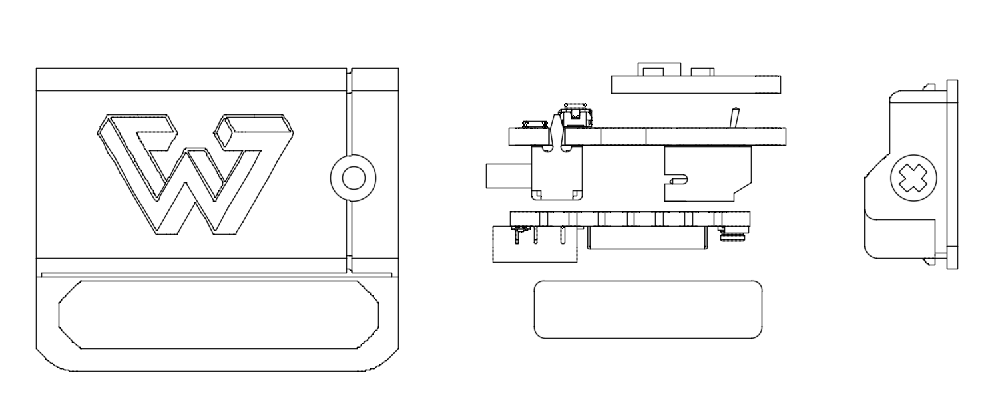
Current Design: Version 3b (eidon-tracker-v3b)
Design Features: - PCB mounting posts: Four 2mm diameter posts with press-fit or screw retention - Battery cavity: Optimized for 40×20×10mm LiPo cells - LED light pipes: Translucent channels guide status LED to external face - Button actuator: Sliding plunger transfers force to PCB-mounted switch - Cable routing: Strain relief channel for charging cable (if applicable) - Labeling surfaces: Recessed areas for role identification stickers
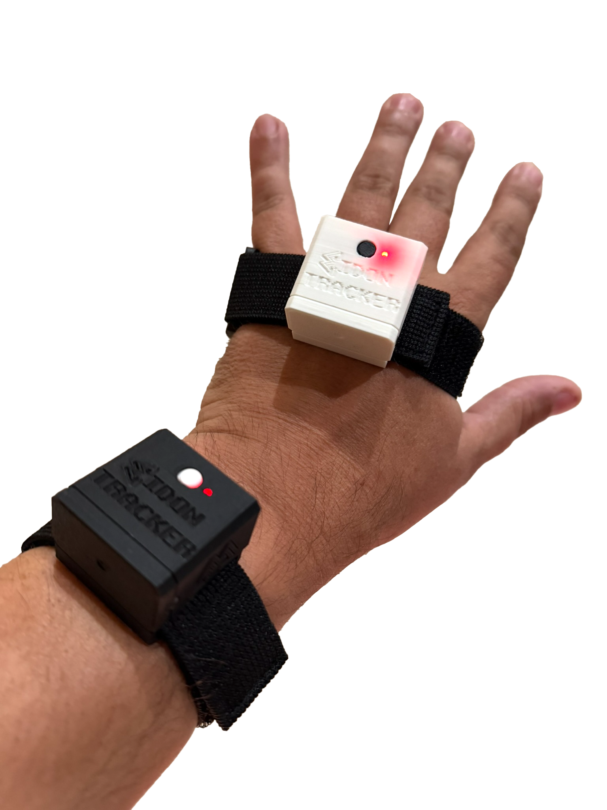
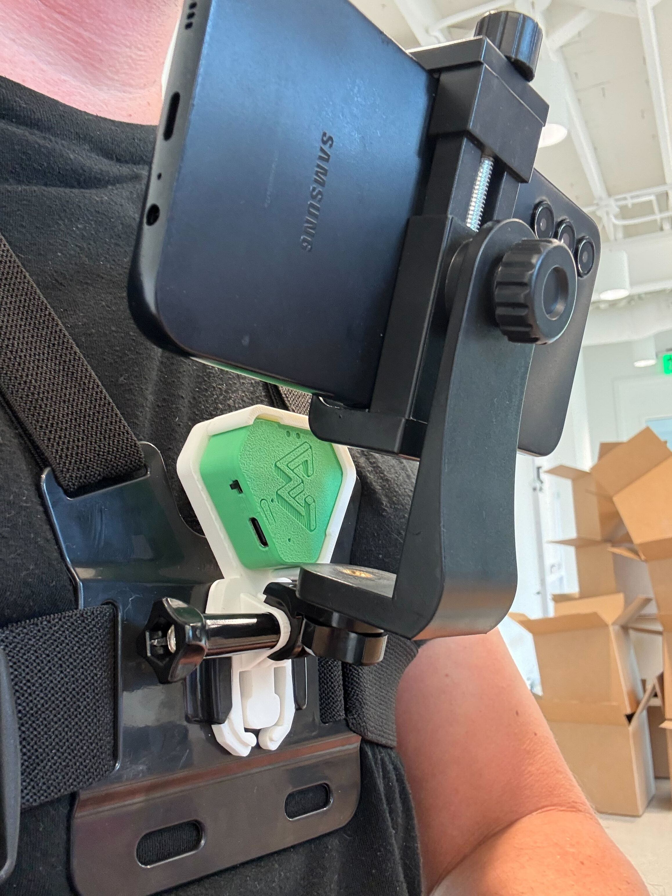
Integrated Mounting System: - Strap channels are built directly into the enclosure body (no separate bracket required) - 20mm elastic webbing threads through molded slots on sides of enclosure - Allows for quick attachment/removal while maintaining secure fit - Earlier design iterations used separate STL mounting brackets (deprecated in v3b)
Strap specifications: - Material: Elastic webbing or neoprene - Width: 20mm (standard) or 25mm (chest) - Closure: Hook-and-loop (Velcro) or buckle - Tension: Adjustable to accommodate varied body sizes
3D Printing Parameters: - Layer height: 0.2mm (standard quality) - Infill: 20% gyroid or honeycomb - Supports: Required for button plunger and undercuts - Print time: ~1 hour per enclosure body, 20min per lid - Post-processing: Minimal; light sanding on mating surfaces
Injection Molding Readiness: - Draft angles: 2° on all vertical walls - No undercuts (except designed-in snap features) - Uniform wall thickness for even cooling - Ejector pin locations planned in non-cosmetic areas
| Category | Item | Quantity | Unit Cost | Notes |
|---|---|---|---|---|
| MCU | Seeed XIAO ESP32-C6 | 1 | $5.20 | Includes castellated module |
| IMU | BNO085 breakout | 1 | $17.51 | Pre-calibrated module |
| Battery | LiPo (200-300mAh) | 1 | $4.59 | With protection circuit |
| Power Switch | Slide/toggle switch | 1 | $0.08 | SPDT switch |
| Enclosure | 3D-printed body + lid + button | 1 | $0.46 | PLA filament (amortized) |
| Mounting | Elastic strap with Velcro | 1 | $3.00 | 20mm elastic webbing |
| Cable | USB-C charging cable | 1 | $1.13 | Data + charging |
| TOTAL | $30.84 | Per device | ||
| 7-device system | $215.88 | Trackers only |
Complete 7-Device Kit (Ready to Use):
| Item | Quantity | Unit Cost | Total |
|---|---|---|---|
| Eidon Tracker devices | 7 | $30.84 | $215.88 |
| Chest harness | 1 | $24.00 | $24.00 |
| USB charging hub | 1 | $35.99 | $35.99 |
| Extra straps (chest mount) | 1 | $3.00 | $3.00 |
| TOTAL SYSTEM COST | $278.87 |
Cost reduction at scale: - 100-unit production: ~$24/device ($168 for 7-device system) - 1000-unit production: ~$18/device ($126 for 7-device system, IMU bulk pricing)
The Eidon Tracker firmware is a sophisticated real-time system managing sensor fusion, wireless communication, power optimization, and multi-device coordination.
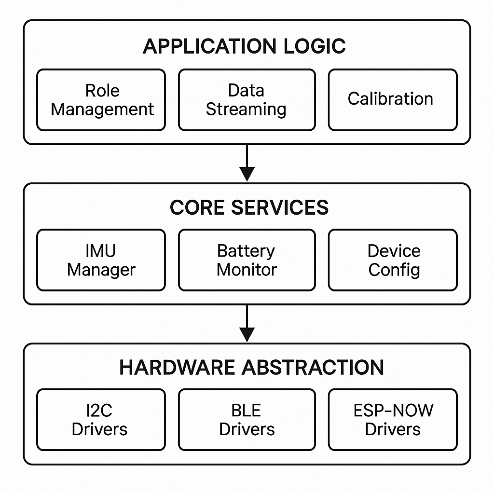
Key dependencies: - Adafruit_BNO08x
v1.2.3+: IMU driver with quaternion output - NimBLE-Arduino
v2.3.1+: Lightweight BLE stack - ResponsiveAnalogRead
v1.2.1: Debounced ADC sampling
Sensor configuration (from
firmware/lib/BNO085/BNO085.cpp):
// Initialize I2C communication at 400kHz
Wire.setPins(SDA_PIN, SCL_PIN); // GPIO20, GPIO19
Wire.begin();
Wire.setClock(400000);
// Configure BNO085 for game rotation vector mode
bno08x.enableReport(SH2_GAME_ROTATION_VECTOR, 20833); // 48Hz (20.83ms)Data acquisition loop (48Hz):
if (bno08x.getSensorEvent(&sensorValue)) {
if (sensorValue.sensorId == SH2_GAME_ROTATION_VECTOR) {
// Extract quaternion components
float qw = sensorValue.un.gameRotationVector.real;
float qx = sensorValue.un.gameRotationVector.i;
float qy = sensorValue.un.gameRotationVector.j;
float qz = sensorValue.un.gameRotationVector.k;
// Apply 180° Z-axis rotation correction for mounting orientation
currentQuaternion.w = qw;
currentQuaternion.x = -qx;
currentQuaternion.y = -qy;
currentQuaternion.z = qz;
}
}Why game rotation vector? - Fuses gyroscope + accelerometer (no magnetometer) - Immune to magnetic interference (ferrous materials, electronics) - Lower latency than full sensor fusion - Ideal for relative tracking where absolute north is irrelevant
Calibration mechanism: - Trigger:
BLE command (0x01) or double-tap gesture detected by IMU -
Action: Send MODE_SLEEP →
MODE_ON sequence to restart sensor fusion - LED
feedback: 300ms solid indicator during reset -
Multi-device: Hub role can broadcast calibration
command to children via ESP-NOW
The firmware implements a unique BLE + ESP-NOW dual-protocol system for efficient multi-device coordination.
BLE (Bluetooth Low Energy) - Primary Interface:
Custom GATT service:
E1D00001-8B5A-3E5B-9E23-4F9B5C91BBDE
| Characteristic UUID | Type | Function | Data Format |
|---|---|---|---|
E1D00002 |
Read/Notify | Quaternion stream | 16 bytes: 4× float32 (w,x,y,z) |
E1D00003 |
Read/Write | Calibration command | 1 byte: 0x01 = reset |
E1D00005 |
Read | Device info | 14 bytes: ID, FW ver, battery%, role, MAC |
E1D00007 |
Read/Write | Role configuration | 7 bytes: role (1) + hub MAC (6) |
E1D00008 |
Read/Notify | Hand quaternion (hub aggregator) | 16 bytes |
E1D00009 |
Read/Notify | Forearm quaternion (hub aggregator) | 16 bytes |
BLE notification rate: 24Hz (42ms intervals) to balance throughput and power
Connection parameters: - Advertising interval: 100-200ms (discoverable mode) - Connection interval: 7.5-20ms (low latency) - Slave latency: 0 (no skipped events) - Supervision timeout: 4000ms
ESP-NOW - Child-to-Hub Communication:
When used: - Devices assigned forearm or hand roles - Hub device (upper arm) aggregates data from hand + forearm - Eliminates need for mobile app to manage 3× BLE connections per arm
Protocol details:
// ESP-NOW packet structure (20 bytes)
struct ESPNowQuaternionPacket {
uint8_t messageType; // 0x01 = quaternion data, 0x02 = command
uint8_t senderRole; // ROLE_LEFT_HAND, ROLE_RIGHT_FOREARM, etc.
uint8_t reserved[2];
float qw, qx, qy, qz; // 16 bytes
} __attribute__((packed));Transmission rate: 48Hz (matches IMU sampling) Channel: WiFi Channel 1 (2412 MHz) Range: 20-50m line-of-sight Latency: <5ms typical
Power optimization: - Children enter “ESP-NOW only” mode after 60s of BLE inactivity - Hub remains BLE-connected to mobile app - Reduces overall system power consumption by ~40%
Seven role types (configured via BLE characteristic
E1D00007):
enum DeviceRole {
ROLE_LEFT_HAND = 0,
ROLE_RIGHT_HAND = 1,
ROLE_LEFT_FOREARM = 2,
ROLE_RIGHT_FOREARM = 3,
ROLE_LEFT_HUB = 4, // Left upper arm (aggregator)
ROLE_RIGHT_HUB = 5, // Right upper arm (aggregator)
ROLE_CHEST = 6,
ROLE_UNKNOWN = 255
};Role assignment workflow: 1. Devices boot in
ROLE_UNKNOWN (read from persistent NVS storage) 2. Mobile
app scans for nearby trackers 3. User assigns roles via app UI (e.g.,
“This is my left hand”) 4. App writes role + hub MAC address to
characteristic E1D00007 5. Device saves to NVS, reboots
with new configuration 6. Future power-ons remember role assignment
Hub role behavior: - Advertises BLE service with
hand/forearm characteristics (E1D00008,
E1D00009) - Listens for ESP-NOW packets from configured
children - Aggregates: Hub’s own IMU (upper arm) + hand + forearm
quaternions - Notifies mobile app with all three data streams at 24Hz -
Forwards calibration commands to children
Child role behavior: - Connects to hub’s ESP-NOW address (stored during role assignment) - Sends local IMU quaternions via ESP-NOW at 48Hz - Timeouts BLE after 60s to save power - Re-enables BLE if ESP-NOW connection lost (failsafe)
Battery monitoring
(firmware/src/main.cpp):
#define BAT_PIN GPIO0
#define BAT_R1 220000 // Upper resistor (Ω)
#define BAT_R2 220000 // Lower resistor (Ω)
#define BAT_MAX_V 4.2 // Fully charged LiPo
#define BAT_MIN_V 3.0 // Safe discharge limit
float readBatteryVoltage() {
int adcValue = analogRead(BAT_PIN); // 12-bit: 0-4095
float voltage = (adcValue / 4095.0) * 3.3 * 2.0; // Voltage divider correction
return voltage;
}
uint8_t calculateBatteryPercent(float voltage) {
if (voltage >= BAT_MAX_V) return 100;
if (voltage <= BAT_MIN_V) return 0;
return (uint8_t)((voltage - BAT_MIN_V) / (BAT_MAX_V - BAT_MIN_V) * 100);
}Update interval: Every 5 seconds (balances accuracy and ADC power consumption)
Current consumption estimates (from
docs/HARDWARE_OVERVIEW.md): - Active mode
(BLE connected + IMU sampling): ~15mA average - ESP-NOW only
mode (BLE off, hub children): ~10mA average - Deep
sleep (future): <10µA
Battery life calculation (200mAh cell): - Active mode: 200mAh / 15mA = 13.3 hours - ESP-NOW mode: 200mAh / 10mA = 20 hours - Mixed usage (40% active, 60% ESP-NOW): ~16 hours
Main LED (GPIO15) - Connection state: - Blinking (500ms on/off): Advertising, not connected - Rapid toggle (100ms): Connected to mobile app - Solid 300ms: IMU calibration in progress - Off: Deep sleep or error
Auxiliary LED (GPIO1) - Secondary indicator: - Blinking: Advertising - Solid: Connected
| Metric | Value | Notes |
|---|---|---|
| IMU sampling rate | 48 Hz | Hardware sensor fusion output |
| BLE notification rate | 24 Hz | Sufficient for smooth visualization |
| ESP-NOW transmission | 48 Hz | Child → hub, raw IMU rate |
| End-to-end latency | <50ms | IMU event → mobile app receipt |
| Packet loss | <0.1% | BLE in good signal conditions |
| CPU utilization | ~40% | Room for additional features |
| RAM usage | ~80KB / 256KB | 31% utilization |
| Flash usage | ~452KB / 4MB | 11% utilization |
firmware/
├── src/
│ ├── main.cpp # Entry point, core loop (1,191 lines)
│ ├── DeviceConfig.h/cpp # Persistent NVS storage for role
│ ├── BLE_Services/
│ │ ├── BLE_Callbacks.h/cpp # Connection/disconnection handlers
│ │ └── BLE_Polling_Service.h/cpp # Periodic characteristic reads
│ └── Role_Services/
│ ├── HubClient_Service.h/cpp # ESP-NOW receiver (hub role)
│ ├── RoleConfig_Service.h/cpp # Role assignment handler
│ └── Hub_Structures.h # Shared data structures
├── lib/
│ ├── BNO085/ # IMU driver wrapper
│ └── ColorManager/ # LED color control utilities
├── platformio.ini # Build configuration
└── ext_nimble_config.h # NimBLE stack customizationKey code locations: - Quaternion correction:
firmware/src/main.cpp:428-432 - Battery monitoring:
firmware/src/main.cpp:156-178 - Role configuration:
firmware/src/Role_Services/RoleConfig_Service.cpp - Hub
aggregation:
firmware/src/Role_Services/HubClient_Service.cpp
The Eidon system transforms raw IMU quaternions into actionable skeletal kinematics through a sophisticated processing pipeline implemented in the eidon-sim repository.
Platform: iOS/Android (Flutter framework)
Core functions: 1. Multi-device BLE management - Scans for Eidon Tracker devices - Connects to 3-5 devices simultaneously (chest + left/right hubs + optional extras) - Subscribes to quaternion notification characteristics - Handles reconnection logic for dropped connections
Raw quaternion packet (from BLE characteristic):
Byte offset | Field | Type | Description
------------|------------|-----------|----------------------------
0-3 | qw | float32 | Quaternion scalar (real) component
4-7 | qx | float32 | Quaternion i (x) vector component
8-11 | qy | float32 | Quaternion j (y) vector component
12-15 | qz | float32 | Quaternion k (z) vector componentQuaternion properties: - Normalized: w² + x² + y² + z² = 1.0 (enforced by BNO085 firmware) - Right-handed coordinate system - Mounting correction pre-applied (180° Z-rotation) - Represents rotation from sensor local frame → global reference frame
Device info packet (characteristic
E1D00005):
Byte offset | Field | Type | Description
------------|---------------|---------|----------------------------
0 | device_id | uint8 | Unique ID (0-255)
1 | fw_major | uint8 | Firmware version major (currently 1)
2 | fw_minor | uint8 | Firmware version minor (currently 2)
3 | battery_pct | uint8 | Battery percentage (0-100)
4 | device_role | uint8 | DeviceRole enum value
5-10 | mac_address | uint8×6 | Bluetooth MAC addressRepository: ~/eidon/eidon-sim
Framework: TypeScript + Three.js
Execution: Web application (browser-based) or Node.js
CLI
A. Quaternion Decoder
(src/core/reportParsers.ts)
Converts raw binary quaternion data to usable format:
function decodeQuaternion(buffer: ArrayBuffer, offset: number): quat {
const dv = new DataView(buffer);
const qw = dv.getFloat32(offset + 0, true); // Little-endian
const qx = dv.getFloat32(offset + 4, true);
const qy = dv.getFloat32(offset + 8, true);
const qz = dv.getFloat32(offset + 12, true);
return [qx, qy, qz, qw]; // gl-matrix format: [x, y, z, w]
}Coordinate frame transformation (sensor → Three.js world):
// Sensor coordinate frame: X=forward, Y=right, Z=up
// Three.js world frame: X=right, Y=up, Z=backward
const upZ = vec3.transformQuat(vec3.create(), [0, 0, 1], quaternion);
const up = [upZ[0], upZ[2], -upZ[1]]; // Swap Y↔Z, negate new Y
const fwdZ = vec3.transformQuat(vec3.create(), [0, 1, 0], quaternion);
const fwd = [fwdZ[0], fwdZ[2], -fwdZ[1]];B. Seven-Degree-of-Freedom Arm Solver
(src/core/ArmSolver.ts)
The ArmSolver class is the heart of the kinematics pipeline. It takes 3 quaternions (upper arm, forearm, hand) and outputs 7 anatomical joint angles:
Shoulder joint (3-DOF): 1. Yaw (internal/external rotation) 2. Pitch (flexion/extension) 3. Roll (abduction/adduction)
Elbow joint (1-DOF): 4. Flex (flexion/extension angle)
Forearm (1-DOF): 5. Roll (pronation/supination)
Wrist joint (2-DOF): 6. Yaw (ulnar/radial deviation) 7. Pitch (flexion/extension)
Algorithmic approach (detailed in Section 6: Mathematical Framework)
C. 3D Skeletal Visualization
(src/ui/scene/)
Two rendering modes:
vectorArm.ts):
skeletalRig.ts):
D. Temporal Filtering
To reduce high-frequency noise from IMU drift and vibration:
Angle unwrapping (prevents discontinuities at ±180°):
function unwrapAngle(current: number, previous: number): number {
const diff = current - previous;
if (diff > 180) return current - 360;
if (diff < -180) return current + 360;
return current;
}Exponential moving average (EMA smoothing):
const ALPHA = 0.15; // Smoothing factor (0=none, 1=no smoothing)
const filtered = previous + ALPHA * (current - previous);Configurable parameters: - ALPHA:
Adjustable via UI slider (0.05 for slow motion, 0.3 for fast motion) -
Can disable smoothing for raw data export
The eidon-sim pipeline generates multiple output formats:
1. Joint Angle Time Series (CSV)
timestamp_ms, shoulder_yaw_L, shoulder_pitch_L, shoulder_roll_L, elbow_flex_L, forearm_roll_L, wrist_yaw_L, wrist_pitch_L, [right arm angles...], chest_yaw, chest_pitch, chest_roll
0, 12.4, -23.1, 5.7, 87.3, -15.2, 8.9, -12.1, ...
21, 12.6, -23.5, 5.9, 88.1, -14.8, 9.2, -11.9, ...
...2. 3D Skeletal Positions (JSON)
{
"timestamp_ms": 0,
"left_arm": {
"shoulder": [0.3, 1.4, 0.0],
"elbow": [0.45, 1.15, 0.12],
"wrist": [0.52, 0.91, 0.08],
"fingertip": [0.58, 0.82, 0.05]
},
"right_arm": { ... },
"chest": [0.0, 1.3, 0.0]
}3. Video with Overlay (MP4)
Synchronized video with: - On-screen joint angle readouts - Skeleton overlay (optional) - Timestamp and session metadata
4. VLA Training Format
Proposed structure (compatible with common VLA frameworks):
{
"task": "pick_and_place_cup",
"episode_id": "ep_00123",
"frames": [
{
"timestamp": 0.000,
"observation": {
"image": "frame_0000.jpg",
"proprio": {
"left_arm_7dof": [12.4, -23.1, 5.7, 87.3, -15.2, 8.9, -12.1],
"right_arm_7dof": [...]
}
},
"action": {
"left_arm_delta": [0.1, 0.0, -0.2, 1.5, 0.0, 0.0, 0.0],
"right_arm_delta": [...]
}
},
...
]
}Action labeling: - Manual annotation via UI timeline - Future: GPT-4V automatic segmentation from video
This section details the mathematical transformations that convert raw IMU quaternions into anatomically meaningful joint angles.
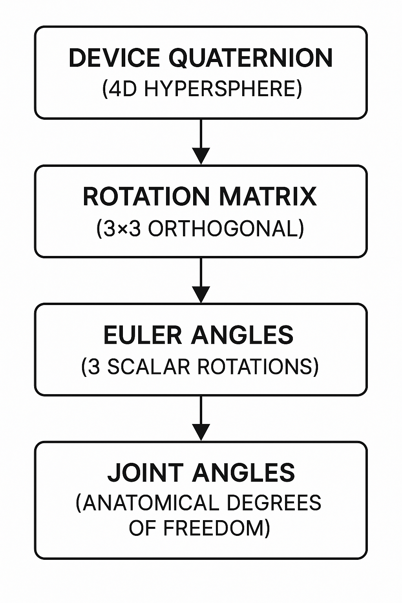
Definition:
A quaternion q is a 4-dimensional number representing 3D rotation:
q = w + xi + yj + zkwhere i² = j² = k² = ijk = -1
Vector form: q = [x, y, z, w] (or
[qx, qy, qz, qw])
Properties: - Unit quaternion: ‖q‖ = √(w² + x² + y² + z²) = 1 - Identity rotation: q = [0, 0, 0, 1] (no rotation) - Inverse: q⁻¹ = [−x, −y, −z, w] / ‖q‖² (for unit quaternions: q⁻¹ = q*) - Composition: Rotate by q₁ then q₂: q_combined = q₂ ⊗ q₁ (note: non-commutative)
Quaternion multiplication (Hamilton product):
q₁ ⊗ q₂ = [
w₁w₂ − x₁x₂ − y₁y₂ − z₁z₂,
w₁x₂ + x₁w₂ + y₁z₂ − z₁y₂,
w₁y₂ − x₁z₂ + y₁w₂ + z₁x₂,
w₁z₂ + x₁y₂ − y₁x₂ + z₁w₂
]Rotating a vector v by quaternion q:
v' = q ⊗ [0, v] ⊗ q⁻¹Implemented efficiently as:
vec3.transformQuat(out, v, q)The quaternion q = [x, y, z, w] converts to a 3×3
rotation matrix:
⎡ 1−2(y²+z²) 2(xy−wz) 2(xz+wy) ⎤
R = ⎢ 2(xy+wz) 1−2(x²+z²) 2(yz−wx) ⎥
⎣ 2(xz−wy) 2(yz+wx) 1−2(x²+y²) ⎦Code implementation
(src/core/mathUtils.ts):
export function quatToMat3(q: quat): mat3 {
const m = mat3.create();
mat3.fromQuat(m, q);
return m;
}Why convert to matrix? - Euler angle extraction requires matrix elements - Some angle calculations (gimbal-lock analysis) easier in matrix form - Compatibility with other graphics libraries
Euler angles represent 3D rotation as three sequential rotations about fixed axes. The order matters due to non-commutativity.
Used for shoulder joint angles (ISB biomechanics convention).
Mathematical derivation:
Given rotation matrix R from quaternion, extract angles:
R = Rz(α) · Ry(β) · Rx(γ)
⎡ cos(α)cos(β) cos(α)sin(β)sin(γ)−sin(α)cos(γ) cos(α)sin(β)cos(γ)+sin(α)sin(γ) ⎤
= ⎢ sin(α)cos(β) sin(α)sin(β)sin(γ)+cos(α)cos(γ) sin(α)sin(β)cos(γ)−cos(α)sin(γ) ⎥
⎣ −sin(β) cos(β)sin(γ) cos(β)cos(γ) ⎦Solving for Euler angles:
α (yaw) = atan2(−R[1][0], R[0][0])
β (pitch) = asin(R[2][0])
γ (roll) = atan2(−R[2][1], R[2][2])Code implementation
(src/core/mathUtils.ts:9-23):
export function eulerZYX(q: quat): [number, number, number] {
const m = mat3.fromQuat(mat3.create(), q);
// Extract matrix elements (column-major indexing)
const m00 = m[0], m10 = m[1], m20 = m[2];
const m21 = m[5], m22 = m[8];
const yaw = Math.atan2(-m10, m00); // Z rotation
const pitch = Math.asin(m20); // Y rotation
const roll = Math.atan2(-m21, m22); // X rotation
return [yaw, pitch, roll]; // Radians
}Singularity handling: When pitch ≈ ±90°, yaw and
roll become coupled (gimbal lock). Solution: - Clamp asin
input to [-1, 1] to prevent NaN - Accept reduced accuracy near
singularity (rare in human arm motion)
Alternative convention for wrist joint (avoids gimbal lock in different configuration).
Direct quaternion formula (avoids matrix conversion):
export function eulerXYZ(q: quat): [number, number, number] {
const [x, y, z, w] = q;
const yaw = Math.atan2(2.0 * (w * z + x * y),
1.0 - 2.0 * (y * y + z * z));
const pitch = Math.asin(Math.max(-1, Math.min(1, 2.0 * (w * y - z * x))));
const roll = Math.atan2(2.0 * (w * x + y * z),
1.0 - 2.0 * (x * x + y * y));
return [yaw, roll, pitch]; // Note: pitch/roll swapped to match convention
}For single-axis joints (elbow flexion), vector dot product is simpler and more robust than Euler angles.
Mathematical formula:
Given unit vectors u (upper arm forward) and l (forearm forward):
θ = arccos(u · l)where u · l = ux·lx + uy·ly + uz·lz (dot product)
Code implementation
(src/core/mathUtils.ts:74-79):
export function elbowFlexDeg(fwdUpper: vec3, fwdLower: vec3): number {
const u = vec3.normalize(vec3.create(), fwdUpper);
const l = vec3.normalize(vec3.create(), fwdLower);
const cosAngle = vec3.dot(u, l);
// Clamp to [-1, 1] to prevent numerical errors in acos
const clampedCos = Math.max(-1, Math.min(1, cosAngle));
return Math.acos(clampedCos) * 180 / Math.PI;
}Why this works: - Independent of shoulder orientation (only measures elbow bend) - No gimbal lock (single axis) - Output range: [0°, 180°] (0° = straight arm, 180° = maximally bent)
Anatomical interpretation: - 0° = Full extension (arm straight) - 90° = Right angle - 145° = Typical maximum flexion
Challenge: Measuring twist of forearm about its long axis while elbow bends.
Naive approach fails: Simply comparing quaternions gives coupled elbow+roll motion.
Robust solution: Project “up” vectors onto plane perpendicular to forearm forward direction.
Mathematical steps:
Extract up/forward vectors from upper arm and forearm quaternions
Project upper arm up vector onto plane perpendicular to forearm forward:
up_upper_proj = up_upper − (up_upper · fwd_forearm) · fwd_forearmProject forearm up vector onto same plane:
up_forearm_proj = up_forearm − (up_forearm · fwd_forearm) · fwd_forearmCalculate angle between projections:
θ = arccos(up_upper_proj · up_forearm_proj / (‖up_upper_proj‖ · ‖up_forearm_proj‖))Determine sign using cross product:
sign = (up_upper_proj × up_forearm_proj) · fwd_forearm ≥ 0 ? −1 : 1Code implementation
(src/core/ArmSolver.ts:114-158):
// Get up vectors from quaternions
const upperUp = vec3.transformQuat(vec3.create(), [0, 0, 1], Q_UpperArm);
const lowerUp = vec3.transformQuat(vec3.create(), [0, 0, 1], Q_Forearm);
const lowerFwd = vec3.transformQuat(vec3.create(), [0, 1, 0], Q_Forearm);
// Project onto plane perpendicular to forearm forward
const upperDot = vec3.dot(upperUp, lowerFwd);
const lowerDot = vec3.dot(lowerUp, lowerFwd);
const upperUpProj = vec3.create();
const lowerUpProj = vec3.create();
vec3.scaleAndAdd(upperUpProj, upperUp, lowerFwd, -upperDot);
vec3.scaleAndAdd(lowerUpProj, lowerUp, lowerFwd, -lowerDot);
vec3.normalize(upperUpProj, upperUpProj);
vec3.normalize(lowerUpProj, lowerUpProj);
// Calculate angle
const cosAngle = vec3.dot(upperUpProj, lowerUpProj);
const angle = Math.acos(Math.max(-1, Math.min(1, cosAngle)));
// Determine sign
const cross = vec3.cross(vec3.create(), upperUpProj, lowerUpProj);
const sign = vec3.dot(cross, lowerFwd) >= 0 ? -1 : 1;
const forearmRollDeg = sign * angle * 180 / Math.PI;Anatomical interpretation: - Negative angles: Pronation (palm down) - Positive angles: Supination (palm up) - Range: Approximately −90° to +90°
Wrist angles should be measured relative to forearm, not absolute. This cancels accumulated drift from shoulder/elbow.
Mathematical approach:
Given forearm quaternion q_forearm and hand quaternion q_hand:
Calculate relative rotation:
q_wrist = q_forearm⁻¹ ⊗ q_handExtract Euler angles from q_wrist
using Z-Y-X convention
Code implementation
(src/core/ArmSolver.ts:162-184):
// Calculate relative quaternion: hand in forearm's reference frame
const Q_Wrist = quat.multiply(
quat.create(),
quat.invert(quat.create(), Q_Forearm),
Q_Hand
);
quat.normalize(Q_Wrist, Q_Wrist);
// Extract wrist Euler angles
const [wristYaw, wristRoll, wristPitch] = eulerZYX(Q_Wrist);
// Convert radians to degrees
const wristYawDeg = wristYaw * 180 / Math.PI;
const wristPitchDeg = wristPitch * 180 / Math.PI;Why relative quaternions? - Drift cancellation: Any IMU drift common to forearm and hand cancels out - Anatomical correctness: Wrist motion is inherently relative to forearm orientation - Gimbal lock avoidance: Wrist rarely reaches singularity in forearm-relative frame
Summary of derivation pipeline for one arm:
Inputs: Q_UpperArm, Q_Forearm, Q_Hand (3 quaternions)
1. Shoulder angles (3-DOF):
[yaw, pitch, roll] = eulerZYX(Q_UpperArm) * 180/π
2. Elbow flex (1-DOF):
fwd_upper = rotate([0,1,0], Q_UpperArm)
fwd_forearm = rotate([0,1,0], Q_Forearm)
flex = elbowFlexDeg(fwd_upper, fwd_forearm)
3. Forearm roll (1-DOF):
up_upper = rotate([0,0,1], Q_UpperArm)
up_forearm = rotate([0,0,1], Q_Forearm)
roll = forearmRollProjectionMethod(up_upper, up_forearm, fwd_forearm)
4. Wrist angles (2-DOF):
Q_wrist = Q_Forearm⁻¹ ⊗ Q_Hand
[yaw, pitch] = eulerZYX(Q_wrist)[0,2] * 180/π
Outputs: [sh_yaw, sh_pitch, sh_roll, el_flex, fr_roll, wr_yaw, wr_pitch]Once joint angles are known, we can reconstruct 3D joint positions using forward kinematics.
Chain structure:
Shoulder (fixed) → [Upper Arm] → Elbow → [Forearm] → Wrist → [Hand] → FingertipsPosition calculation:
P_shoulder = [±0.3, 1.4, 0.0] (left/right offset from chest)
P_elbow = P_shoulder + L_humerus · fwd_upper
P_wrist = P_elbow + L_radius · fwd_forearm
P_fingertips = P_wrist + L_hand · fwd_handSegment lengths (configurable via UI): -
L_humerus = 0.30m (default) - L_radius = 0.26m
(default) - L_hand = 0.10m (default)
Code implementation
(src/ui/scene/vectorArm.ts:144-154):
const shoulder: vec3 = this.side === 'left' ? [-0.3, 1.4, 0] : [0.3, 1.4, 0];
const elbowPos = vec3.scaleAndAdd(
vec3.create(),
shoulder,
upperArmForward,
HUM_LEN()
);
const wristPos = vec3.scaleAndAdd(
vec3.create(),
elbowPos,
forearmForward,
RAD_LEN()
);
const fingertipPos = vec3.scaleAndAdd(
vec3.create(),
wristPos,
handForward,
HAND_LEN()
);Visualization: - Render cylinders/lines between joint positions - Color-code segments (blue = upper arm, green = forearm, yellow = hand)
The Eidon Tracker is designed as an open platform for embodied AI research. This section describes integration points with external systems.
Common VLA frameworks: - OpenVLA: Open-source vision-language-action model - Octo: General-purpose robot policy trained on diverse datasets - RT-1/RT-2: Google’s Robotics Transformer models - Diffusion Policy: Behavior cloning via diffusion models
Integration approach:
Example: OpenVLA integration pseudocode
from eidon import EidonDataset
from openvla import VLATrainer
# Load Eidon dataset
dataset = EidonDataset("path/to/collected_data/")
# Convert to OpenVLA format
vla_episodes = []
for episode in dataset:
frames = []
for t in episode.timestamps:
frame = {
"observation": {
"image": episode.get_video_frame(t),
"proprio": episode.get_joint_angles(t), # 7-DOF per arm
},
"action": compute_action_label(episode, t), # Delta angles
"timestamp": t,
}
frames.append(frame)
vla_episodes.append({"task": episode.task_label, "frames": frames})
# Train VLA model
trainer = VLATrainer(config)
trainer.train(vla_episodes)Challenge: Human arm kinematics ≠ robot arm kinematics
Solutions:
A. Direct Joint Mapping (for humanoid robots)
If robot has similar kinematic structure (7-DOF arms):
# Map human angles directly to robot joints
robot_left_arm = [
human_left_arm.sh_yaw,
human_left_arm.sh_pitch,
human_left_arm.sh_roll,
human_left_arm.el_flex,
human_left_arm.fr_roll,
human_left_arm.wr_yaw,
human_left_arm.wr_pitch,
]
robot.set_joint_targets(robot_left_arm)Limitations: - Requires joint limit adjustments (humans have different ROM than robots) - May need scaling factors for elbow/wrist ranges
B. Cartesian Task Space Mapping
For robots with different DOF (e.g., 6-DOF industrial arms):
# Use forward kinematics to get end-effector position
wrist_position_3d = eidon.get_wrist_position(episode, t)
wrist_orientation_quat = eidon.get_hand_quaternion(episode, t)
# Solve inverse kinematics for robot
robot_joint_angles = robot.ik_solver(
target_pos=wrist_position_3d,
target_ori=wrist_orientation_quat,
)
robot.set_joint_targets(robot_joint_angles)C. Reinforcement Learning Refinement
Use human demonstrations as initialization for RL policy:
Use cases: - Validate data quality before deploying to physical robot - Generate synthetic training data with domain randomization - Test policy generalization
Supported simulators: - NVIDIA Isaac Sim: High-fidelity physics + rendering - MuJoCo: Fast physics for RL training - PyBullet: Open-source, widely used in research
Example: Isaac Sim replay
from omni.isaac.kit import SimulationApp
from eidon import EidonDataset
# Load dataset
dataset = EidonDataset("data/task_demonstrations/")
# Spawn humanoid asset in Isaac Sim
humanoid = spawn_humanoid("eidon_humanoid.usd")
# Replay motion
for t in dataset.episode(0).timestamps:
angles = dataset.get_joint_angles(t)
humanoid.set_joint_targets(angles)
step_simulation()Benefits: - Visual validation: Ensure captured motion looks anatomically correct - Physics checking: Detect impossible movements (e.g., arm passing through torso) - Data augmentation: Add camera viewpoint variations, lighting changes
Architecture:
Human + Eidon Trackers → Mobile App → WebSocket Server → Robot Controller → Actuators
(BLE) (WiFi/LTE) (ROS2/MQTT)Latency breakdown: - IMU → BLE: <20ms - BLE → Mobile App: ~10-30ms - Mobile App → Server: 20-100ms (network dependent) - Server → Robot: 10-50ms - Total: 60-200ms end-to-end
Optimization strategies: 1. Predictive filtering: Extrapolate motion to compensate latency 2. Direct robot connection: Skip cloud server (mobile app → robot WiFi direct) 3. Differential control: Send velocity commands instead of position targets
Safety considerations: - Deadman switch: Stop robot if BLE connection lost - Joint limit enforcement: Clamp commanded angles to safe ranges - Emergency stop: Physical button on robot + app UI
Collected datasets require task-level annotations for VLA training.
Annotation workflow:
Recommended tools: - CVAT (Computer Vision Annotation Tool): Video annotation with timeline - Label Studio: Multi-modal annotation (video + time series data) - Custom Eidon annotation UI: Integrated with eidon-sim visualization
For developers integrating Eidon data:
Dataset loader (Python)
from eidon import EidonDataset
# Load dataset from directory
dataset = EidonDataset("path/to/dataset/")
# Iterate over episodes
for episode in dataset:
print(f"Task: {episode.task_label}")
print(f"Duration: {episode.duration_seconds}s")
print(f"Number of frames: {len(episode)}")
# Access frame data
for frame in episode:
# Get synchronized data at timestamp t
img = frame.image # numpy array (H, W, 3)
angles = frame.joint_angles # dict: {"left_arm": [7 floats], "right_arm": [7 floats]}
quat = frame.quaternions # dict: {"chest": [4 floats], "left_hand": [4 floats], ...}
positions = frame.joint_positions_3d # dict: {"left_elbow": [x,y,z], ...}BLE connection (TypeScript/JavaScript)
import { EidonBLEDevice } from '@eidon/ble-sdk';
// Scan for devices
const devices = await EidonBLEDevice.scan();
// Connect to specific device
const tracker = await EidonBLEDevice.connect(devices[0]);
// Subscribe to quaternion stream
tracker.onQuaternion((quat) => {
console.log(`Quaternion: w=${quat.w}, x=${quat.x}, y=${quat.y}, z=${quat.z}`);
});
// Trigger calibration
await tracker.calibrate();
// Read battery level
const battery = await tracker.getBatteryPercent();
console.log(`Battery: ${battery}%`);The Eidon Tracker platform enables a wide range of applications beyond VLA training.
Primary use case: Create large-scale datasets of human task demonstrations for robot learning.
Target tasks: - Kitchen manipulation: Cooking, dishwashing, food preparation - Manufacturing assembly: Component insertion, tool use, quality inspection - Healthcare: Patient transfer, medication administration, assistive tasks - Domestic chores: Laundry folding, cleaning, organization - Agriculture: Harvesting, pruning, sorting
Advantages over lab teleoperation: - Diverse environments: Collect data in real kitchens, factories, hospitals - Natural variability: Multiple demonstrators with different techniques - Scale: Deploy 100+ trackers to different sites simultaneously - Cost: ~$200/system vs. $10k+ for lab motion capture
Dataset metrics (projected): - 1 hour of recording = ~172,800 samples (48Hz × 3600s) - 100 demonstrators × 8 hours = 138M samples - Approaching LLM-scale data: Billions of samples across diverse tasks
Scenario: Control humanoid robot from remote location
Use cases: - Hazardous environments: Nuclear decommissioning, disaster response - Space exploration: Mars rovers with human-like manipulators - Underwater operations: Subsea maintenance with ROVs - Telemedicine: Remote surgery or physical therapy
Applications: - Ergonomic analysis: Assess workplace strain and injury risk - Sports biomechanics: Golf swing, baseball pitch analysis - Clinical gait analysis: Movement disorders (Parkinson’s, stroke) - Prosthetics research: Evaluate artificial limb performance
Advantages: - Field-deployable: Measure real work environments, not just lab - Long-duration monitoring: 8+ hour battery life - Quantitative: ±1-2° accuracy comparable to research-grade systems - Cost: ~$200 vs. $50k+ for Vicon/OptiTrack systems
Use cases: - Real-time mocap for VR/AR: Avatar control in metaverse applications - Video game animation: Capture combat moves, dance sequences - Film pre-visualization: Block scenes with digital actors
Integration with animation tools: - Export joint angles or GLTF animation tracks - Compatible with Blender, Maya, Unreal Engine
Applications: - ROM (range of motion) tracking: Measure progress during PT - Home exercise monitoring: Ensure correct form during unsupervised exercises - Compliance tracking: Verify patient performed prescribed exercises
Clinical workflow: 1. Patient performs exercise wearing trackers 2. System records joint angles throughout session 3. Automated analysis flags improper form or reduced ROM 4. Report sent to physical therapist for review
| Specification | Value |
|---|---|
| Dimensions | 45mm × 30mm × 15mm |
| Weight | 25g (with battery) |
| Enclosure material | 3D-printed PLA/ABS (injection-mold-ready) |
| Water resistance | IP42 (splash-resistant) |
| Operating temperature | -20°C to +70°C |
| Specification | Value |
|---|---|
| CPU | RISC-V single-core @ 160MHz |
| RAM | 512KB SRAM |
| Flash | 4MB |
| Wireless | BLE 5.0, WiFi 6 (802.11ax), ESP-NOW |
| GPIO | 22 programmable pins |
| ADC | 12-bit, 6 channels |
| Power consumption | ~15mA active, <10µA deep sleep |
| Specification | Value |
|---|---|
| Sensor type | 9-DOF (gyro + accel + mag) |
| Gyroscope range | ±2000°/s |
| Accelerometer range | ±16g |
| Magnetometer range | ±2500µT |
| Output rate | 48Hz (quaternion) |
| Accuracy | ±2° RMS dynamic, ±1° RMS static |
| Calibration | Automatic sensor fusion |
| Interface | I2C (400kHz) |
| Specification | Value |
|---|---|
| Battery type | LiPo (Lithium Polymer) |
| Capacity | 150-300mAh (depending on size) |
| Voltage | 3.7V nominal (3.0-4.2V range) |
| Battery life | 8-12 hours continuous operation |
| Charging | USB-C (5V, 500mA) |
| Battery monitoring | 12-bit ADC via voltage divider |
| Specification | Value |
|---|---|
| BLE range | 10-20m indoors, 50m+ line-of-sight |
| ESP-NOW range | 20-50m typical |
| BLE data rate | 24Hz quaternion notifications |
| ESP-NOW data rate | 48Hz (child → hub) |
| Latency | <50ms end-to-end (IMU → mobile app) |
| Packet loss | <0.1% (BLE in good conditions) |
| Specification | Value |
|---|---|
| Framework | Arduino (C/C++) |
| Build system | PlatformIO |
| Firmware version | 1.2 (current) |
| OTA updates | Planned (future feature) |
| Flash usage | ~452KB / 4MB (11%) |
| RAM usage | ~80KB / 512KB (16%) |
| CPU utilization | ~40% average |
| Field | Type | Size | Range |
|---|---|---|---|
| qw | float32 | 4 bytes | [-1.0, 1.0] |
| qx | float32 | 4 bytes | [-1.0, 1.0] |
| qy | float32 | 4 bytes | [-1.0, 1.0] |
| qz | float32 | 4 bytes | [-1.0, 1.0] |
| Total | 16 bytes | Unit quaternion (‖q‖=1) |
| Angle | Range | Units |
|---|---|---|
| Shoulder yaw | -90° to +90° | degrees |
| Shoulder pitch | -180° to +60° | degrees |
| Shoulder roll | -45° to +180° | degrees |
| Elbow flex | 0° to 145° | degrees |
| Forearm roll | -90° to +90° | degrees |
| Wrist yaw | -30° to +30° | degrees |
| Wrist pitch | -70° to +70° | degrees |
| Platform | Requirements |
|---|---|
| iOS | iOS 14+ (BLE 5.0 support) |
| Android | Android 10+ (API level 29+) |
| RAM | 4GB+ recommended |
| Storage | 500MB+ free (for app + temporary data) |
| Camera | 1080p @ 30fps minimum |
| Platform | Requirements |
|---|---|
| OS | Windows 10+, macOS 12+, Linux (Ubuntu 20.04+) |
| Browser | Chrome 90+, Edge 90+, Firefox 88+ (WebGL 2.0 support) |
| RAM | 8GB+ |
| GPU | Integrated graphics sufficient (dedicated GPU for faster rendering) |
| Specification | Value |
|---|---|
| Size | 25mm × 20mm |
| Layers | 2 (top + bottom) |
| Thickness | 1.6mm |
| Material | FR4 |
| Copper weight | 1 oz (35µm) |
| Finish | ENIG (Electroless Nickel Immersion Gold) |
| Min trace/space | 0.15mm / 0.15mm |
| Min drill | 0.3mm |
| Assembly | SMT (surface mount) + hand soldering (modules) |
| Specification | Value |
|---|---|
| Print technology | FDM (Fused Deposition Modeling) |
| Layer height | 0.2mm |
| Infill | 20% gyroid |
| Material | PLA or ABS |
| Print time | ~60 min (body), ~20 min (lid) |
| Post-processing | Light sanding on mating surfaces |
| Cost per unit | ~$1.50 (material + amortized printer cost) |
The Eidon Tracker system represents a paradigm shift in embodied AI training data collection. By combining custom hardware, sophisticated firmware, and advanced kinematics processing, we enable researchers to collect human demonstration data at a scale previously unattainable.
Immediate applications: - VLA training dataset collection for kitchen manipulation tasks - Teleoperation interface for humanoid robots (unitree H1, Figure 01) - Biomechanics research (ergonomics, sports science)
Future development roadmap: - Expanded tracking: Lower body tracking (hips, knees, ankles) for full-body capture - Sensor fusion: Integrate camera-based tracking for absolute position (indoor SLAM) - Cloud platform: Centralized dataset repository with annotation tools - Pre-trained models: Release VLA models trained on Eidon datasets - Enterprise SDK: Commercial licensing for robotics companies
The “LLM moment” for humanoid robotics requires data infrastructure that democratizes embodied AI research. Eidon Tracker provides that infrastructure—enabling researchers, startups, and enterprises to collect human demonstration data at scale, anywhere tasks are performed.
We’re not just building motion capture hardware. We’re building the foundation for a new generation of embodied intelligence.
| Component | Part/Model | Manufacturer | Qty | Unit Price | Ext. Price | Notes |
|---|---|---|---|---|---|---|
| Microcontroller | XIAO ESP32-C6 | Seeed Studio | 1 | $5.20 | $5.20 | BLE 5.0 + WiFi 6 |
| IMU Sensor | BNO085 | Adafruit (Bosch) | 1 | $17.51 | $17.51 | Pre-calibrated 9-DOF |
| LiPo Battery | 200-300mAh 3.7V | Generic | 1 | $4.59 | $4.59 | JST connector, protection circuit |
| Power Switch | SPDT slide switch | Generic | 1 | $0.08 | $0.08 | PCB mount |
| 3D Printed Parts | Body + lid + button | PLA filament | 1 set | $0.46 | $0.46 | ~15g material per device |
| Elastic Strap | 20mm Velcro elastic | Generic | 1 | $3.00 | $3.00 | ~300mm length |
| USB Cable | USB-C charge cable | Generic | 1 | $1.13 | $1.13 | 1m length |
| Total | $30.84 | Per device |
Note: Current costs are based on small-batch production (10-20 units). PCB fabrication and passive components (resistors, LEDs) are included in the XIAO module cost.
| Item | Qty | Unit Price | Ext. Price | Notes |
|---|---|---|---|---|
| Eidon Tracker devices | 7 | $30.84 | $215.88 | 2× hand, 2× forearm, 2× upper arm, 1× chest |
| Velcro elastic straps | 6 | $3.00 | $18.00 | Included in tracker cost above |
| Chest harness | 1 | $24.00 | $24.00 | Adjustable chest mount system |
| USB charging hub | 1 | $35.99 | $35.99 | 7+ port USB hub for simultaneous charging |
| USB cables | 7 | $1.13 | $7.91 | Included in tracker cost above |
| $278.87 | Total system cost |
Effective cost breakdown: - Trackers only: $215.88 (7 devices) - Accessories: $62.99 (harness + hub) - Total ready-to-use kit: $278.87
100-unit production (700 trackers): - IMU: $15.00 ea (10% bulk discount) - ESP32-C6: $4.50 ea - Battery: $3.50 ea - 3D printing: $0.30 ea (batch production) - Estimated cost: ~$24/device ($168 for 7-device system)
1000-unit production (7000 trackers): - IMU: $12.00 ea (30% bulk discount) - ESP32-C6: $4.00 ea - Battery: $2.50 ea - Enclosure: $0.50 ea (injection molding tooling amortized) - Estimated cost: ~$18/device ($126 for 7-device system)
/Users/robert/eidon/eidon-tracker/
├── firmware/
│ ├── src/main.cpp (core firmware logic)
│ ├── lib/BNO085/ (IMU driver)
│ └── platformio.ini (build config)
├── pcb/eidon-tracker/
│ ├── eidon-tracker.kicad_sch (schematic)
│ ├── eidon-tracker.kicad_pcb (layout)
│ └── gerbers/*.zip (manufacturing files)
├── cad/
│ ├── eidon-tracker-v3b.f3d (Fusion 360 source)
│ ├── eidon-tracker.step (universal CAD)
│ └── *.stl (3D print files)
├── web/
│ ├── index.html (visualizer UI)
│ └── script.js (BLE + Three.js logic)
└── docs/
├── FIRMWARE_ARCHITECTURE.md
├── GATT_SERVICE_REFERENCE.md
└── HARDWARE_OVERVIEW.md/Users/robert/eidon/eidon-sim/
├── src/
│ ├── core/
│ │ ├── reportParsers.ts (quaternion decoding)
│ │ ├── mathUtils.ts (Euler, vector math)
│ │ └── ArmSolver.ts (7-DOF angle solver)
│ └── ui/scene/
│ ├── vectorArm.ts (forward kinematics visualization)
│ └── skeletalRig.ts (GLTF model animation)
└── docs/
└── kinematics.md (mathematical documentation)| Service/Characteristic | UUID | Type | Description |
|---|---|---|---|
| Primary Service | E1D00001-8B5A-3E5B-9E23-4F9B5C91BBDE |
Service | Main Eidon Tracker service |
| Quaternion | E1D00002-8B5A-3E5B-9E23-4F9B5C91BBDE |
Char (RN) | Quaternion data (w,x,y,z) |
| Calibration | E1D00003-8B5A-3E5B-9E23-4F9B5C91BBDE |
Char (RW) | Calibration command (0x01) |
| Device Info | E1D00005-8B5A-3E5B-9E23-4F9B5C91BBDE |
Char (R) | Device ID, FW ver, battery, role |
| Hand Quaternion | E1D00008-8B5A-3E5B-9E23-4F9B5C91BBDE |
Char (RN) | Aggregated hand quat (hub only) |
| Forearm Quaternion | E1D00009-8B5A-3E5B-9E23-4F9B5C91BBDE |
Char (RN) | Aggregated forearm quat (hub only) |
| Role Config Service | E1D00006-8B5A-3E5B-9E23-4F9B5C91BBDE |
Service | Role assignment service |
| Role Assignment | E1D00007-8B5A-3E5B-9E23-4F9B5C91BBDE |
Char (RW) | Device role + hub MAC address |
Legend: - R = Read - W = Write - N = Notify - RN = Read + Notify - RW = Read + Write
BLE (Bluetooth Low Energy): Wireless protocol optimized for low-power device communication. Used for Eidon Tracker → mobile app data streaming.
BNO085: Bosch 9-DOF IMU with hardware sensor fusion. Outputs quaternions at 48Hz.
DOF (Degrees of Freedom): Number of independent parameters defining a joint’s movement. Shoulder = 3-DOF, elbow = 1-DOF, wrist = 2-DOF.
Embodied AI: AI systems that interact with the physical world through robotic bodies.
ESP-NOW: Espressif’s proprietary low-latency wireless protocol. Used for child device → hub communication.
Euler Angles: Representation of 3D rotation as three sequential axis rotations (e.g., yaw-pitch-roll).
GATT (Generic Attribute Profile): BLE protocol layer defining service/characteristic structure.
Gimbal Lock: Singularity in Euler angle representation where two axes align, losing a degree of freedom.
IMU (Inertial Measurement Unit): Sensor combining gyroscope, accelerometer, and magnetometer. Measures orientation and acceleration.
NimBLE: Lightweight Bluetooth stack for ESP32 (alternative to Bluedroid).
Pronation/Supination: Forearm rotation (pronation = palm down, supination = palm up).
Quaternion: 4D number (w, x, y, z) representing 3D rotation. Avoids gimbal lock, efficient for interpolation.
RISC-V: Open-source instruction set architecture. Used in ESP32-C6 microcontroller.
ROM (Range of Motion): Maximum angular extent a joint can move.
Sensor Fusion: Combining data from multiple sensors (gyro, accel, mag) to compute accurate orientation.
VLA (Vision-Language-Action): Multimodal AI model mapping visual observations + language instructions → robot actions.
Company: Eidon Website: www.eidon.ai Technical Support: robert@eidon.ai GitHub: github.com/eidon/eidon-tracker
Licensing: - Hardware designs (PCB, enclosure): Open-source (CERN-OHL-P v2 or similar) - Firmware: Open-source (MIT License or similar) - Software (eidon-sim): Open-source (MIT License) - Documentation: Creative Commons CC-BY-4.0
Commercial licensing available for: - White-label OEM integration - Custom firmware development - Enterprise support contracts
Complete electrical schematic showing circuit design, component interconnections, and signal routing.
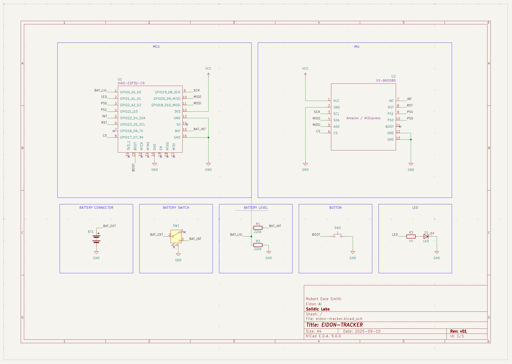
Key functional blocks: - Power Management: LiPo battery input, voltage monitoring circuit (220kΩ voltage divider) - Microcontroller: Seeed XIAO ESP32-C6 with pin assignments for I2C, GPIO, ADC - IMU Interface: BNO085 I2C connection (400kHz), interrupt pin, address configuration - Status Indicators: LED with current-limiting resistor, user button interface
For full resolution schematic and PCB layout files, see:
pcb/eidon-tracker/eidon-tracker.kicad_sch
Document prepared by: Eidon Engineering Team Last updated: November 2025 Document version: 1.0